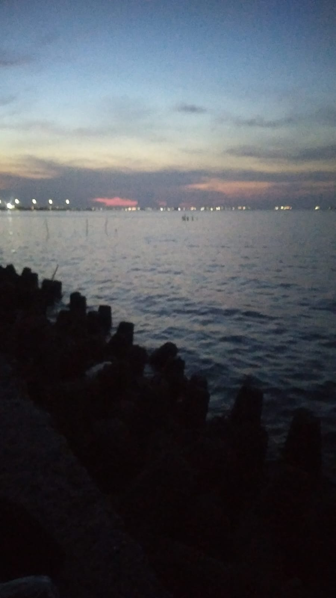
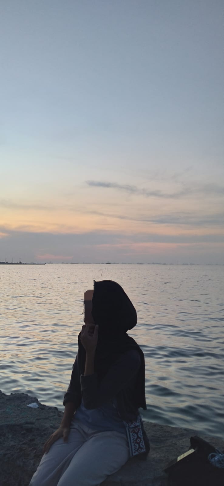

MY HOLIDAY DAY
Paradise
Ini adalah cerita pengalaman saya
semenak libur, saya mengabiskan liburan
saya dengan berajalan-jalan
Pergi ke Rs.Koja
pada saat liburan tiba saya dan saudara saya memutuskan untuk pergi menyenangkan diri kita ber 2 ada beberapa tempat yang kami kunjungii tempat pertama yang kami ber dua kunjungi yaitu RS.kKOJA karena Searah dengan perjalanan yang akan kami tuju kami ber dua ke tempat tersebut untuk mengambil obat setelah kami mengambil obat kita pun menyempatkan diri ke toilet untuk membenarkan kerudung dan lainyaa dan tidak lupa untuk foto di cermin
Berjalan - Jalan
setelah kita ber2 mengambil obat kita pun menuju tempat pertama yang ingin kita kunjungi yaitu Mr.diy yang ada di KOJA TRADE MALL , tadinya kita pikir tempat tersebut banyak barang barang uang menarik hati kita untuk membelinya ternyata banyak sekali barang barang yang kosong dan juga barang yang kita cari tidak ada disana. kita berada di tempat itu lumayan cukup lama karena tempat tersebut lumayan besar dan tidak ada satu barang pun yang menarik hati kita ber2 untuk membelinya, karena sudah terlalu lama kita mengelilingi tempat tersebut dan tidak ada barang juga yang kami beli kami memutuskan untuk pergi dari tempat tersebut
karena kita keluar dari tempat tersebut sudah lumayan sore dan kita memutuskan untuk pergi ke laut marunda. sebelum kita masuk ke dalam laut tersebut kita ber dua menyempatkan untuk jajan di luar kita lumayan banyak beli jajanan di luar sana setelah jajan kita masuk dan sampai disana kita menghabiskan waktu sore dengan mendengarkan suara gemburan air laut yang sangat menenangkan hati kita bercerita tentang hal hal apa yang terjadi di dalam diri kita berdua saling sharing² dan ga kerasa waktu sudah malam dan kita memutuskan untuk pulang dan sebelum pulang kita ga lupa untuk jajan buat di bawa pulang ke rumahh.
 created with
Website Builder Software .